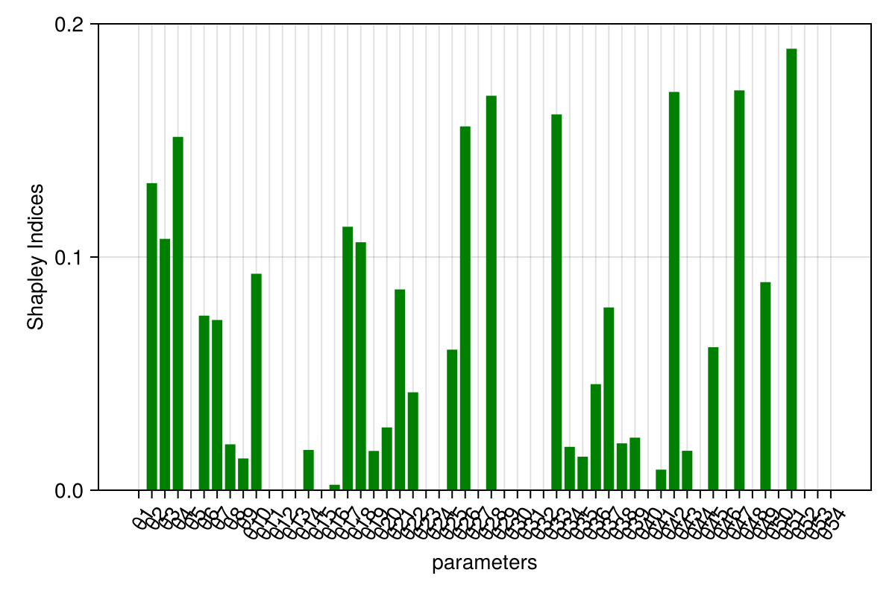
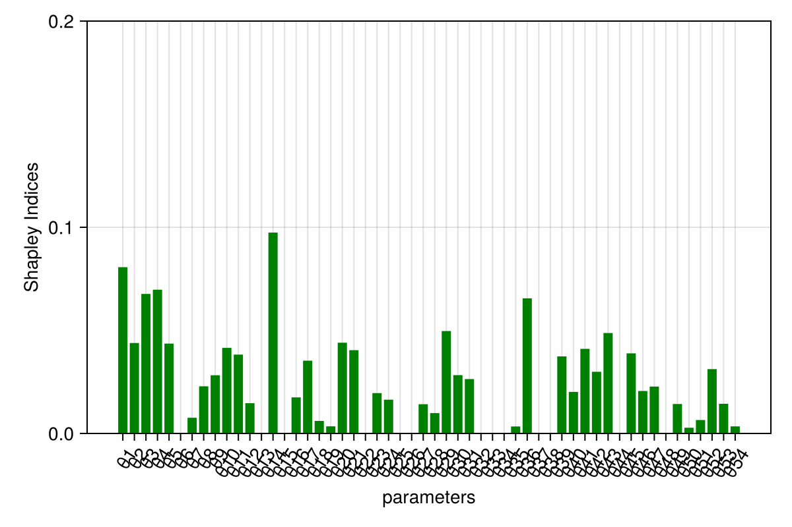

Using the Shapley method in case of correlated inputs
One of the primary drawbacks of typical global sensitivity analysis methods is their inability to handle correlated inputs. The Shapley method is one of the few methods that can handle correlated inputs. The Shapley method is a game-theoretic approach that is based on the idea of marginal contributions of each input to the output.
It has gained extensive popularity in the field of machine learning and is used to explain the predictions of black-box models. Here we will use the Shapley method on a Scientific Machine Learning (SciML) model to understand the impact of each parameter on the output.
We will use a Neural ODE trained on a simulated dataset from the Spiral ODE model. The Neural ODE is trained to predict output at a given time. The Neural ODE is trained using the SciML ecosystem.
As the first step let's generate the dataset.
using GlobalSensitivity, OrdinaryDiffEq, Flux, SciMLSensitivity, LinearAlgebra
using Optimization, OptimizationOptimisers, Distributions, Copulas, CairoMakie
u0 = [2.0f0; 0.0f0]
datasize = 30
tspan = (0.0f0, 1.5f0)
function trueODEfunc(du, u, p, t)
true_A = [-0.1f0 2.0f0; -2.0f0 -0.1f0]
du .= ((u .^ 3)'true_A)'
end
t = range(tspan[1], tspan[2], length = datasize)
prob = ODEProblem(trueODEfunc, u0, tspan)
ode_data = Array(solve(prob, Tsit5(), saveat = t))2×30 Matrix{Float32}:
2.0 1.9465 1.74178 1.23837 0.577126 … 1.40686 1.3702 1.29214
0.0 0.798831 1.46473 1.80877 1.86465 0.451328 0.728635 0.972033Now we will define our Neural Network for the dynamics of the system. We will use a 2-layer neural network with 10 hidden units in the first layer and the second layer. We will use the Chain function from Flux to define our NN.
dudt2 = Flux.Chain(x -> x .^ 3,
Flux.Dense(2, 10, tanh),
Flux.Dense(10, 2))
p, re = Flux.destructure(dudt2) # use this p as the initial condition!
dudt(u, p, t) = re(p)(u) # need to restructure for backprop!
prob = ODEProblem(dudt, u0, tspan)
θ = [u0; p] # the parameter vector to optimize
function predict_n_ode(θ)
Array(solve(prob, Tsit5(), u0 = θ[1:2], p = θ[3:end], saveat = t))
end
function loss_n_ode(θ)
pred = predict_n_ode(θ)
loss = sum(abs2, ode_data .- pred)
loss
end
loss_n_ode(θ)
callback = function (state, l) #callback function to observe training
display(l)
return false
end
# Display the ODE with the initial parameter values.
callback(θ, loss_n_ode(θ))
# use Optimization.jl to solve the problem
adtype = Optimization.AutoZygote()
optf = Optimization.OptimizationFunction((p, _) -> loss_n_ode(p), adtype)
optprob = Optimization.OptimizationProblem(optf, θ)
result_neuralode = Optimization.solve(optprob,
OptimizationOptimisers.Adam(0.05),
callback = callback,
maxiters = 300)retcode: Default
u: 54-element Vector{Float32}:
2.1172907
0.78837883
-2.830712
-0.34006178
0.20832399
1.575451
2.3067584
1.4224625
-0.113953546
2.5548751
⋮
0.36493233
-1.0013185
1.4057362
1.4793072
0.7090711
1.0440918
0.14145118
-1.1438516
-0.79066527Now we will use the Shapley method to understand the impact of each parameter on the resultant of the cost function. We will use the Shapley function from GlobalSensitivity to compute the so called Shapley Effects. We will first have to define some distributions for the parameters. We will use the standard Normal distribution for all the parameters.
First let's assume no correlation between the parameters. Hence the covariance matrix is passed as the identity matrix.
d = length(θ)
mu = zeros(Float32, d)
#covariance matrix for the copula
Covmat = Matrix(1.0f0 * I, d, d)
#the marginal distributions for each parameter
marginals = [Normal(mu[i]) for i in 1:d]
copula = GaussianCopula(Covmat)
input_distribution = SklarDist(copula, marginals)
function batched_loss_n_ode(θ)
# The copula returns samples of `Float64`s
θ = convert(AbstractArray{Float32}, θ)
prob_func(prob, i, repeat) = remake(prob; u0 = θ[1:2, i], p = θ[3:end, i])
output_func(sol, i) = (sum(abs2, ode_data .- Matrix(sol)), false)
ensemble_prob = EnsembleProblem(prob; prob_func, output_func)
out = solve(
ensemble_prob, Tsit5(), EnsembleThreads(); saveat = t, trajectories = size(θ, 2))
return out
end
shapley_effects = gsa(
batched_loss_n_ode, Shapley(; n_perms = 100, n_var = 100, n_outer = 10),
input_distribution, batch = true)GlobalSensitivity.ShapleyResult{Vector{Float64}, Vector{Float64}}([-0.054024018265467974, 0.13167884234824317, 0.1077884247179063, 0.1515250409111053, -0.021106243372457433, 0.07486136022556092, 0.07299751433726058, 0.019672343066027526, 0.013612632355234477, 0.09282773052456944 … 0.06131553448406073, -0.09642126888354319, 0.17146562625025807, -0.10060097566803486, 0.08923285261279862, -0.06674893300135179, 0.1893233929843711, -0.04160978329004315, -0.01098539190648813, -0.20454509167158322], [0.562372300118065, 0.5528590517953946, 0.6332201691406053, 0.6732977251335974, 0.5117435346978889, 0.724177611493077, 0.6021599708403886, 0.5961598870829798, 0.593408397972897, 0.6216338487046111 … 0.532481439200491, 0.6660089184357678, 0.7802527220839772, 0.533065056159577, 0.6042143106771352, 0.5052160805081448, 0.6103242363755874, 0.5623091768826031, 0.5334516654005332, 0.4830652950376039], [-1.1562737264968754, -0.9519248991707303, -1.13332310679768, -1.1681385003507456, -1.0241235713803196, -1.34452675830087, -1.1072360285099012, -1.148801035616613, -1.1494678276716435, -1.1255746129364683 … -0.9823480863489015, -1.4017987490176482, -1.3578297090343372, -1.1454084857408058, -1.0950271963143863, -1.0569724507973157, -1.0069121103117802, -1.143735769979945, -1.0565506560915332, -1.151353069945287], [1.0482256899659397, 1.2152825838672165, 1.3488999562334927, 1.4711885821729562, 0.9819110846354048, 1.494249478751992, 1.2532310571844223, 1.188145721748668, 1.1766930923821126, 1.3112300739856073 … 1.104979155317023, 1.2089562112505616, 1.7007609615348533, 0.9442065344047361, 1.2734929015399834, 0.9234745847946121, 1.3855588962805225, 1.060516203399859, 1.0345798722785569, 0.7422628866021205])barplot(
1:54, shapley_effects.shapley_effects;
color = :green,
figure = (; size = (600, 400)),
axis = (;
xlabel = "parameters",
xticklabelrotation = 1,
xticks = (1:54, ["θ$i" for i in 1:54]),
ylabel = "Shapley Indices",
limits = (nothing, (0.0, 0.2))
)
)
Now let's assume some correlation between the parameters. We will use a correlation of 0.09 between all the parameters.
Corrmat = fill(0.09f0, d, d)
for i in 1:d
Corrmat[i, i] = 1.0f0
end
#since the marginals are standard normal the covariance matrix and correlation matrix are the same
copula = GaussianCopula(Corrmat)
input_distribution = SklarDist(copula, marginals)
shapley_effects = gsa(
batched_loss_n_ode, Shapley(; n_perms = 100, n_var = 100, n_outer = 100),
input_distribution, batch = true)GlobalSensitivity.ShapleyResult{Vector{Float64}, Vector{Float64}}([0.08064641116630422, 0.04387334758269761, 0.06767201395076929, 0.0697271708663765, 0.04358147084332086, -0.022784001602690417, 0.00760487981875027, 0.02286216206376679, 0.02822792880228371, 0.04150635178299168 … 0.03884681272903536, 0.020591423994387723, 0.022738515644037248, -0.0023113142104007004, 0.014279138507296132, 0.0027819174663447155, 0.00652012509353211, 0.031194543039242975, 0.014395047808416593, 0.003438107470460078], [0.234053115705969, 0.18803380271297432, 0.24203434661295795, 0.21745116913172047, 0.1852764504067605, 0.18540919465837752, 0.1662761664035899, 0.19937420642842013, 0.19408965185616073, 0.15621780985899494 … 0.1931910698323338, 0.21260684789201253, 0.17498347231290926, 0.17390863163620135, 0.16965836535383055, 0.18433560213335323, 0.16399406055579216, 0.1903626258523768, 0.16684383888517137, 0.19165130360323746], [-0.37809769561739504, -0.32467290573473206, -0.4067153054106283, -0.3564771206317956, -0.3195603719539297, -0.38618602313311035, -0.31829640633228595, -0.36791128253593663, -0.3521877888357913, -0.2646805555406384 … -0.3398076841423389, -0.39611799787395685, -0.3202290900892649, -0.3431722322173553, -0.31825125758621176, -0.3585158627150276, -0.3149082335958205, -0.34191620363141556, -0.3126188764065193, -0.3721984475918853], [0.5393905179500035, 0.4124196009001273, 0.5420593333121668, 0.49593146236454866, 0.40672331364057146, 0.34061801992772955, 0.33350616596978644, 0.4136356066634702, 0.4086436464403587, 0.34769325910662174 … 0.4175013096004096, 0.4373008458627323, 0.3657061213773394, 0.3385496037965539, 0.346809534600804, 0.364079697647717, 0.3279484837828847, 0.4043052897099015, 0.3414089720233525, 0.3790746625328055])barplot(
1:54, shapley_effects.shapley_effects;
color = :green,
figure = (; size = (600, 400)),
axis = (;
xlabel = "parameters",
xticklabelrotation = 1,
xticks = (1:54, ["θ$i" for i in 1:54]),
ylabel = "Shapley Indices",
limits = (nothing, (0.0, 0.2))
)
)